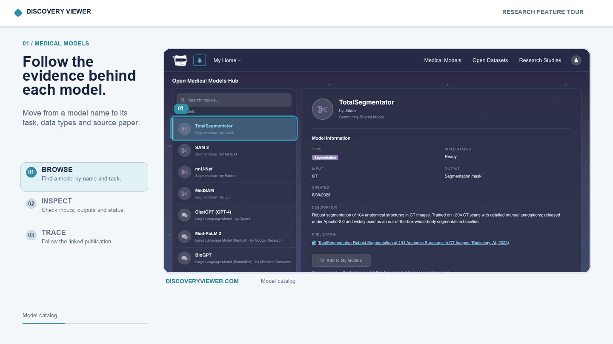
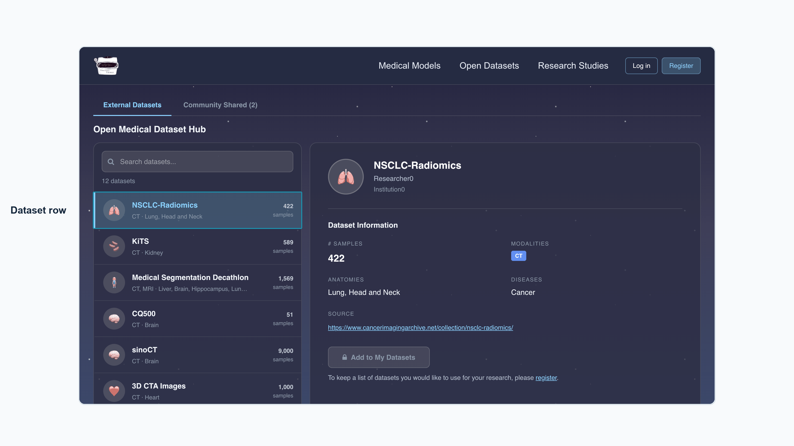

Discovery Viewer Research Demo
A medical AI research-platform demo focused on models, datasets, reviewer workflows, and reusable validation evidence.
Model discoverySearchable records with model purpose, inputs, outputs, creator, and source paper.
Dataset discoveryDataset cards organized by modality, anatomy, sample count, and source information.
Validation directionStudy records can connect model, dataset, protocol, result, reviewer, and citation trail.
Demo Video
Feature Highlights


Research Positioning
- Keep patient data governed by its owner.
- Make models, datasets, protocols, and validation outcomes easier to find and cite.
- Give contributors recognition for reusable research artifacts.
- Present clinical AI as something that needs evidence, review, and cross-site validation before deployment claims.